01 — Problem
Juniors need real work; small brands need sharp design.
Two gaps that fit together: emerging designers and independent brands.
The collective I set up — junior-led, full-service, real clients. Already running the thing.
Curated women's fashion for the GCC's fashion-engaged, digitally fluent shopper - bridging fragmented access to niche and emerging designers through thoughtful curation and a brand-led approach. Curation over consumption. Quality over excess. Style with longevity.
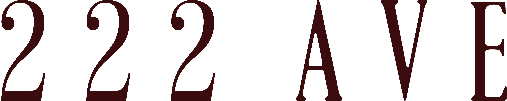
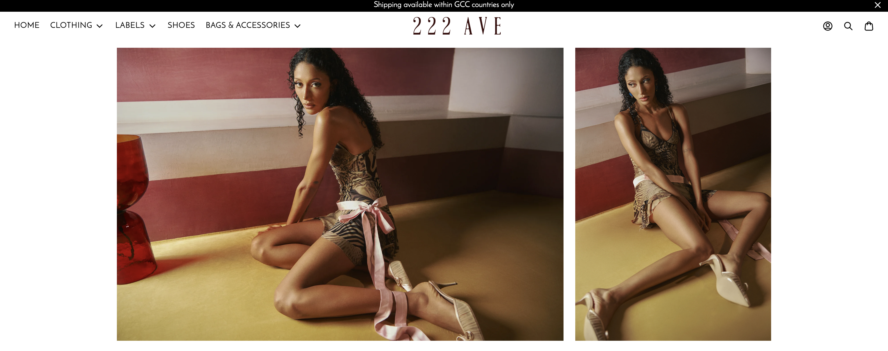
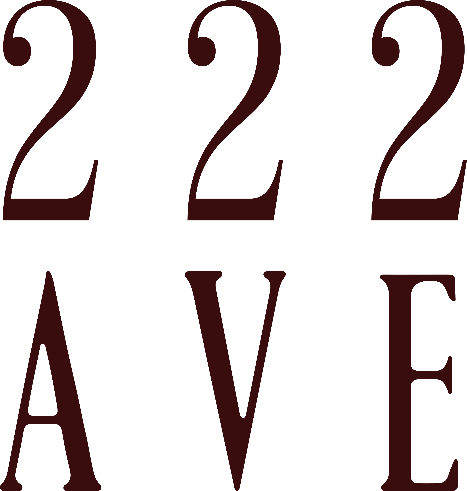
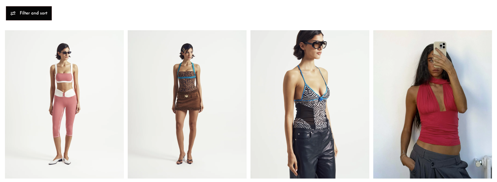

Empowering women to possess their bodies - Someri makes your body the statement. Minimalist designs and intentional fabrics highlight the female form with bold simplicity.
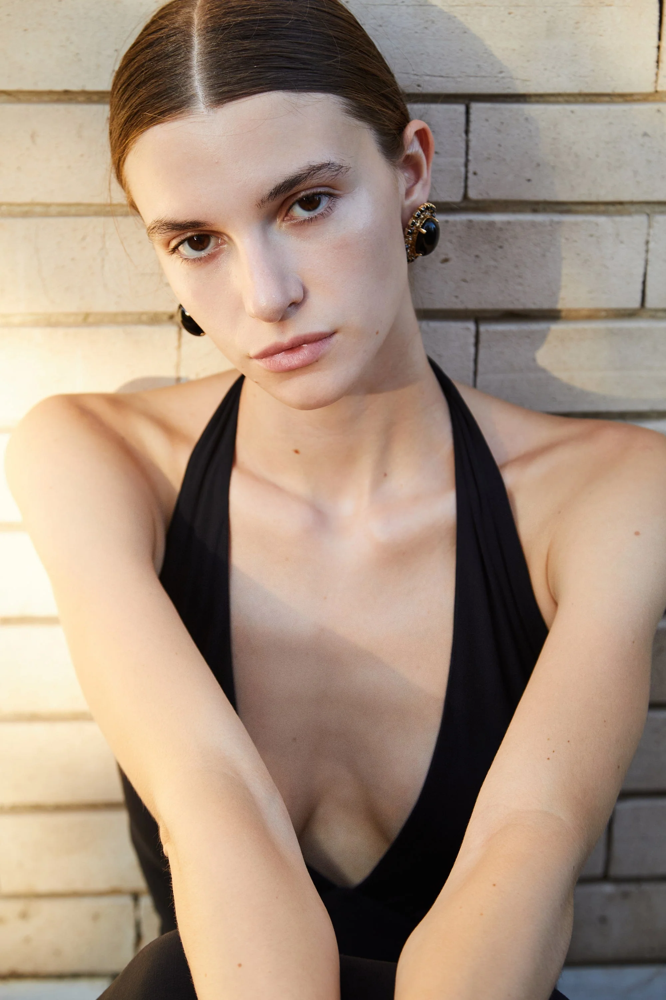

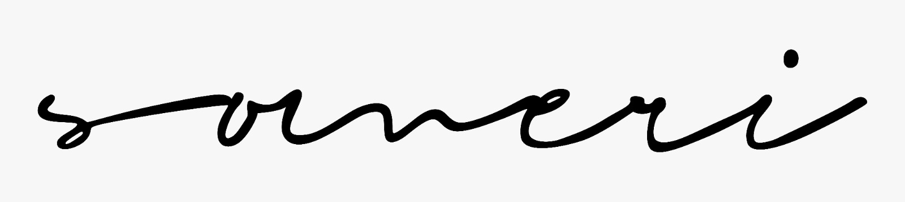
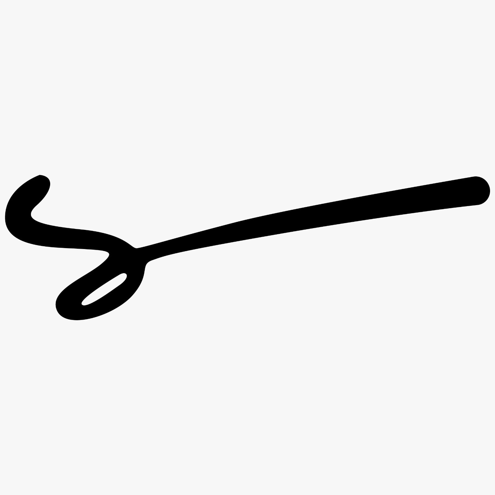


A brief that seeks to uncover deceptive practices, such as greenwashing, in the fashion industry - promoting awareness about transparency and encouraging consumers to consider the true nature of products by looking beyond the label.
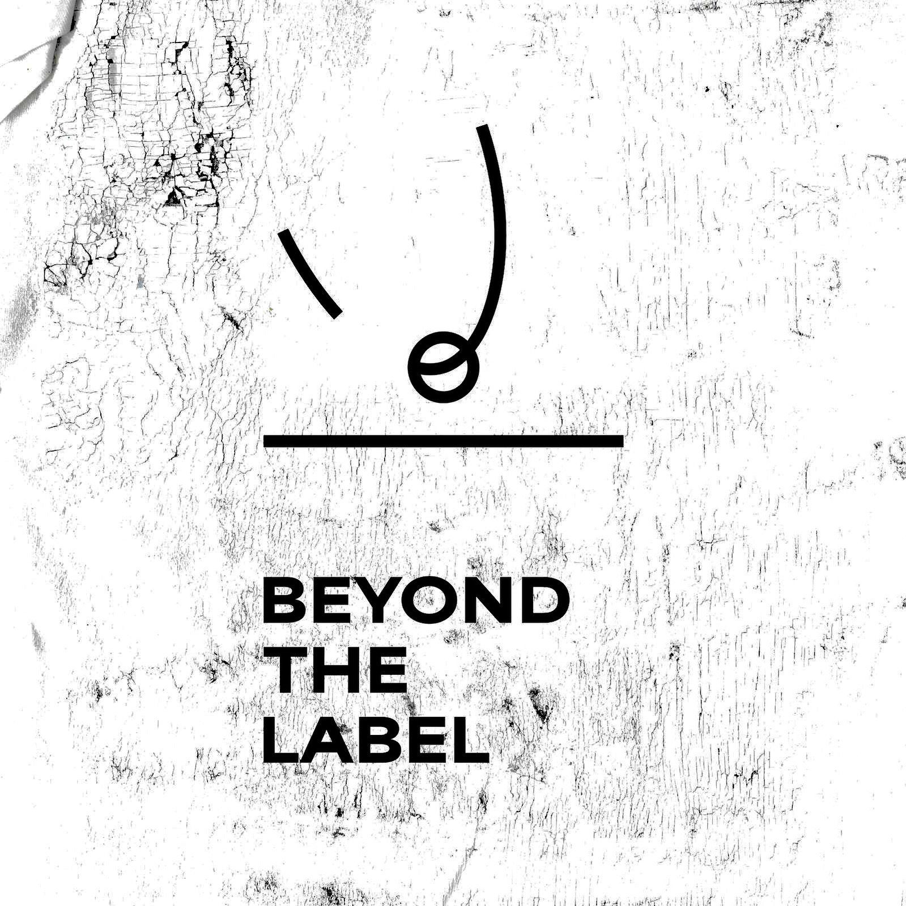
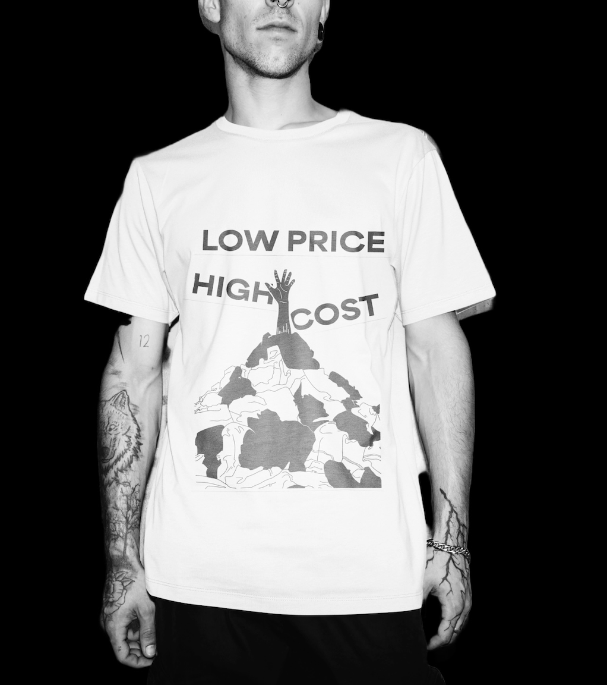
The logo is the texture itself: a scan of the t-shirt I made, screen-printed with a hidden message under a layer of paint that turns transparent when wet, revealing "beyond the label" underneath. Wash it - greenwash it - again and again and the paint cracks further; that cracked surface became the mark. Commissioned by a fast fashion brand in Hampstead and used as the centrepiece of a talk on greenwashing.
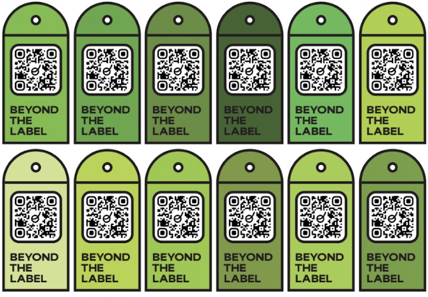
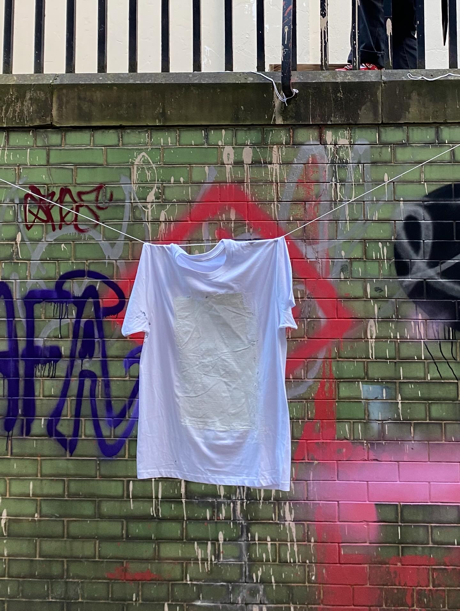
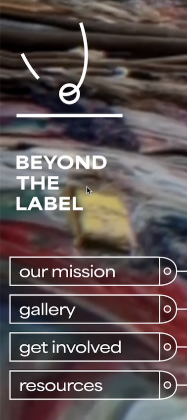
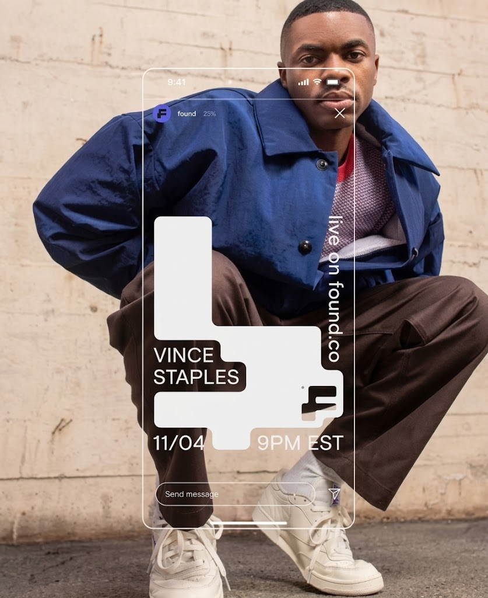

Two gaps that fit together: emerging designers and independent brands.
I set up sqrd and curated a fresh identity for 222 AVE.
Real briefs, delivered. A collective already in motion.